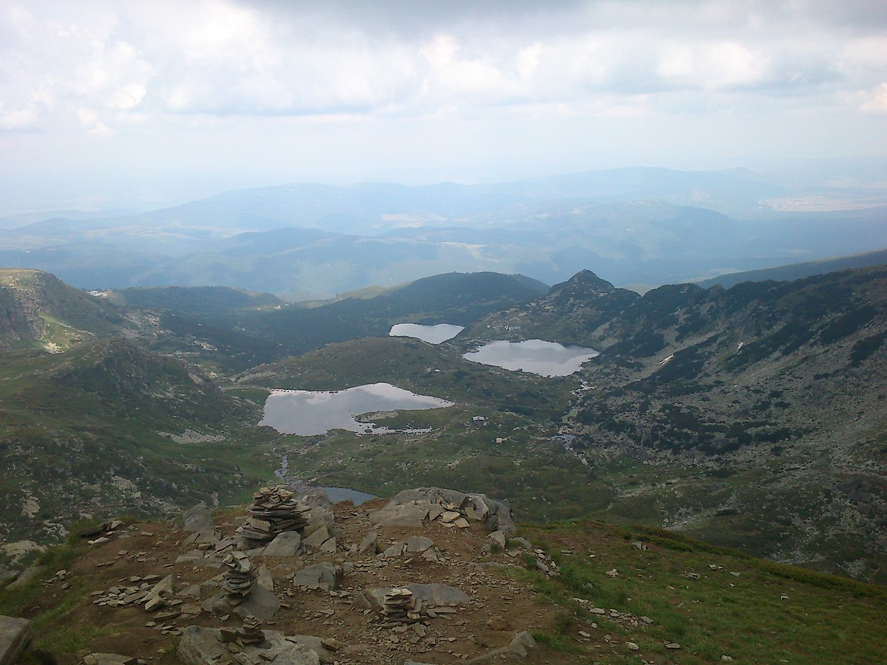

Shamrock is the fifth lake in the group of the Seven Rila Lakes . In the past, the lake was called Srednya Gyol, translated from its Turkish name Ortagyol.
It is located at 2216 m above sea level, at the foot of the eastern slope of Suhiya rid. It has an irregular shape and low banks. Its area is 26 decares , it is 6.5 m deep. It is 240 m long and up to 200 m wide. Its volume is 54,000 m 3 .
The waters of the upper lakes flow into the Shamrock through the Twin (the fourth lake). Interestingly, it flows with two outflows: northeastern, through which passes the tourist trail, and northwestern, on the sharp bank, which is considered the initial flow of the German River . drain only through the first outflow into the Fish Lake (sixth).